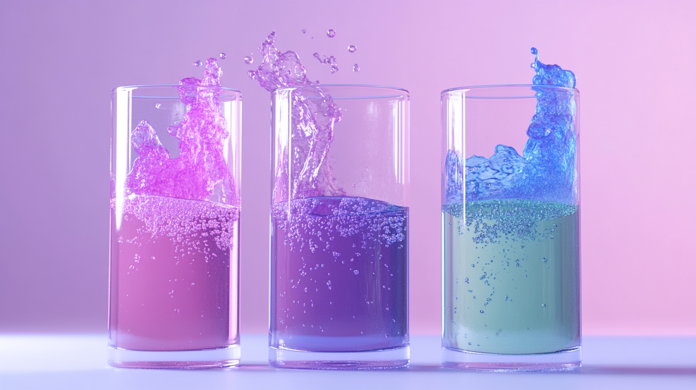
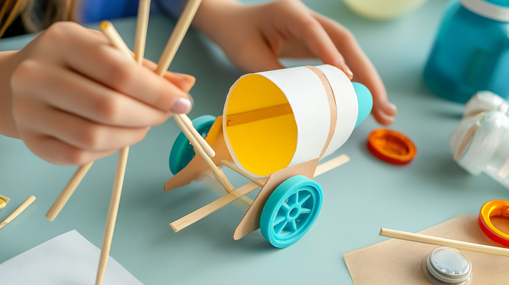
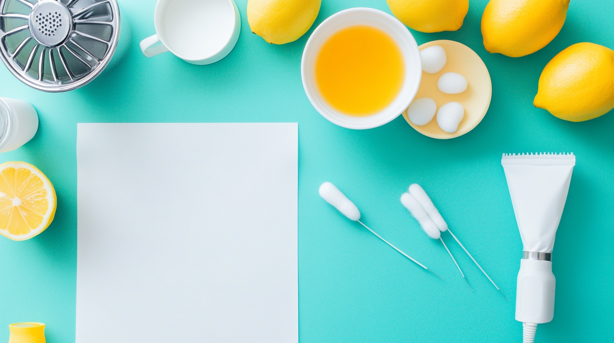
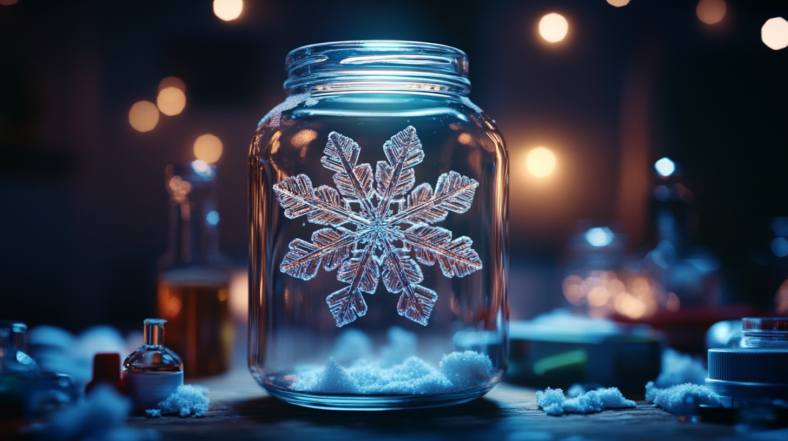

「空はなぜ青いのか、氷はなぜ水に浮くのか。」
子供たちの日常には、科学への好奇心を刺激する「なぜ？」がいっぱいです。 今回は、そんな子供たちの疑問を解き明かし、知的好奇心を育む【家庭でできる理科実験】を、理系塾講師の視点から厳選して5つご紹介します。
特別な器具は不要！家にあるもので手軽にできる実験を通して、子供たちの探求心を育み、科学的好奇心と考察力を楽しく伸ばしましょう！
この記事の最後で「実験解説PDFと追加の実験例」を無料プレゼント中！
こちらから無料ダウンロードへ
家庭で理科実験を行う３つのメリット
実験を選ぶ際の３つのポイント
おすすめ家庭理科実験５選
1. 色が変わる！？魔法のジュース実験
紫キャベツジュースを使って、液体の性質を学ぶ不思議な実験です。身近な液体が酸性、アルカリ性によって色が変わるカラフルな様子は、子供たちの感覚を強く刺激します。実験を通して、pHや化学変化を自然と学べます。
準備するもの
- 紫キャベツ
- お酢
- 重曹
- 透明なコップ ３個
- 水
実験手順
実験のポイント
- 💡色の変化を観察しやすいように、白いトレーや紙の上で実験を行うのがおすすめです。
- 💡紫キャベツ汁の代わりに、紫色の花(アサガオなど)でも実験可能です。
2. 空気の力でGO！風船エアーカー実験
風船から出る空気の力で進む車を作る実験です。身近なもので空気の力を体感し、作用・反作用の法則を学ぶことができます。
準備するもの
- ペットボトルまたは紙コップ
- ストロー
- 風船
- 輪ゴム
- 竹串またはストロー
- タイヤ (ペットボトルキャップなど)
実験手順
実験のポイント
- 💡風船の大きさや空気の量を調整することで、車の速度や距離の変化を観察してみましょう。
- 💡車体の材料を工夫して、デザインや駆動方式を工夫するのも面白いです。
3. 秘密のメッセージ！？レモン汁で秘密の手紙実験
レモン汁で書いた文字が、熱を加えることで浮かび上がるという、なんとも不思議な実験です。秘密のメッセージを書いて、相手に伝える楽しさを体験しましょう。
準備するもの
- レモン汁
- 筆または綿棒
- 白い紙
- アイロンまたはドライヤー
実験手順
実験のポイント
- 💡熱を加える際は、紙を焦がさないようにしましょう。
- 💡レモン汁以外にも、牛乳や玉ねぎの汁などでも実験可能です。
- 💡秘密のメッセージを書く際に、子供たちの創造性を刺激するようなお題(宝の地図、暗号など)を出すのも面白いでしょう。
4. 静電気で楽しもう！風船ヘア静電気実験
風船を髪の毛でこすることで発生する静電気の力を体感する実験です。静電気が目に見えない力であることを実感し、なぜ静電気が起きるのか導入へのプロローグにもなります。冬の乾燥した日に行うとより効果的に実験できます。
準備するもの
- 風船いくつか
- ティッシュペーパーまたは薄い紙
実験手順
実験のポイント
- 💡髪の毛が長い方がより静電気が起きやすいです。
- 💡天気や湿度によって静電気の起きやすさが変化します。湿度の低い日(乾燥した日)に行うとより効果的に実験できます。
- 💡風船の代わりに、プラスチック製の櫛や下敷きでも実験可能です。
5. 美しい雪の結晶！自作クリスタル雪実験
溶液を冷やす過程で結晶が形成される美しさを利用した実験です。時間が経つにつれてゆっくり成長していく結晶の様子は、子供たちの観察力を育みます。完成した結晶はインテリアやプレゼントにもなります。
準備するもの
- ホウ砂(硼砂)
- パイプクリーナー(モール)
- 温水
- コップまたはジャー
- 洗濯ばさみまたは割り箸
- 凧糸または紐
実験手順
実験のポイント
- 💡溶液の濃度が高いほど、より美しい結晶が成長しやすくなります。
- 💡溶液をゆっくり冷やすことで、より大きな結晶を作ることができます。
- 💡パイプクリーナーの色や形を工夫すると、オリジナル雪の結晶を作成できます。
ご家庭での理科実験をもっと豊かに、もっと手軽にしていただきたい、子供たちに楽しんでほしい。そんな思いから、今回の記事でご紹介した理科実験５選に加え、さらに様々な実験の詳細をまとめたオリジナルPDFを無料でプレゼントします！
PDF内容
追加の理科実験レシピ
今回の記事で紹介しきれなかった、その他のオススメ理科実験を収録
詳細な手順とポイント
各実験の詳細な手順とポイントを図解入りで分かりやすく解説
準備物リストと安全対策
準備物リストや実験の安全性に関する注意事項もまとめ
子ども向け実験ワークシート
実験の様子や結果を記録できる、オリジナルワークシートつき
【受け取り方法】
下記ボタンをクリックして、メールアドレスをご登録ください。
登録完了後、すぐにダウンロードリンクをお送りします。
※こちらの特典は数量限定です。お早めにお受け取りください。
安全に実験を行うために
家庭でできる理科実験は、子供たちの好奇心を刺激し、探求心を育むための素晴らしい機会です。今回ご紹介した実験を参考に、安全に配慮しながら、子供と一緒に理科の世界を楽しんでみてください。きっと、素敵な発見がたくさんあるはずです。